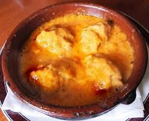

Este plato es uno de mis favoritos ya que a mi me encantan los pimientos de cualquier manera ya sean fritos, asados, al natural, en conserva, rellenos de pescado o de carne.
Este es un plato laborioso pero el resultado merece la pena. Lo bueno de es que lo puedes hacerlo por partes. Por un lado puedo preparar los pimientos y cogenlarlos. Otro día que me viene bien, preparo la salsa que también la puedo congelar. Y cuando lo necesito saco todo, lo descongelo debidamente y lo pongo a hervir durante unos minutos y a la mesa. De ese modo no me pego el palizón de hacerlo de una sola vez.
Y si me pongo en faena preparo varios pimientos para dos o tres veces. Ya sabeís, mujer previsora vale por dos.
Lo suelo preparar cuando tengo alguna cena con amigos o familiares y siempre que los hago tengo un exito increible.
Ingredientes (para 4 personas):
Para el relleno:
- 8 pimientos frescos llamados de bola. También se pueden usar pimientos en corserva para rellenar.
- 150 gr de picadillo de magro de cerdo.
- 150 gr de picadillo de ternera.
- un poco de miga de pan remojado en leche.
- 2 yemas de huevo.
- 1 cebolla picada fina.
- 2 dientes de ajo.
- 1 cucharada de perejil picado.
- para rebozar los pimientos harina y huevo.
- sal y pimienta.
- Para la salsa:
- 1 cebolla.
- 1 zanahoria.
- 1 cucharada de puré de tomate.
- 1 vaso de vino blanco.
- 1 pimiento choricero.
- un poco de harina.
- caldo de carne.
- aceite y sal.
Elaboracion:
Preparar primero la salsa:
Ponemos en una cazuela aceite y añadiendo la cebolla picada, la zanahoria en trocitos y perejil también picado.Esperamos a que se dore un poco y a continuación añadimos el pimiento choricero, previamente remojado, y dos cucharadas de harina. Tostar sin dejar de remover con una cuchara para que no se queme. Añadimos la cucharada de puré de tomate y esperamos un ratito. A continuación añadimos un poco de caldo (a mi no me gusta añadir mucho para que salga la salsa más espesa) y vino blanco. Sazonamos con sal y pimienta y dejamos que hierva a fuego no muy fuerte durante unos 15-20 mn sin dejar de remover para que no se pegue. Una vez pasado este tiempo, lo pasamos todo por un pasapuré o por el chino. Si os dais cuenta, se quedan todos los pellejos en el pasapuré obteniendo de ese modo una salsa fina pero a la vez tiene que ser un poco espesa. Y la reservamos.
Preparar los pimientos:
Primero preparamos el relleno de los pimientos poniendo en una cazuela u chorro de aceite, la cebolla bien picada, el ajo y el perejil y dejamos que se dore. Por otro lado ponemos la miga de pan a remojar en leche. Una vez que está dorado se agrega la carne picada de magro de cerdo y la de ternera. Dejamos que se haga haga todo. Añadimos la miga de pan remojada en leche y lo mezclamos todo. Se sabrá si está en su punto cuando se recoge formando una bola.
Retiramos del fuego, echamos dos yemas de huevo y un poco de perejil picado. Mezclamos todo y lo dejamos enfriar.
Preparamos los pimientos. Si son de lata, los escurrimos bien y lo rellenamos. Si son naturales es necesario asarlos bien y qutarles la piel. El procedimiento mejor y que menos los estropea es asarlos al fuego vivo, sobre la parrilla. Una vez asados se tapan con una bolsa de plástico o con papel de plata y se deja que suden durante media hora, por lo menos. De esa forma, es más fácil quitarles la piel. Se les quita las simientes, se lavan con agua y una vez bien escurridos se rellenan.
Cuando están rellenos los pimientos se pasan por harina y huevo y se frien en una sartén con abundante aceite caliente y sin quemarlos. Se van dejando en una cazuela de barro.
A continuación echamos la salsa por encima, que estén bien cubiertos, y dejamos que hiervan unos diez minutos.
¡¡y a la mesa!!
Imagen
